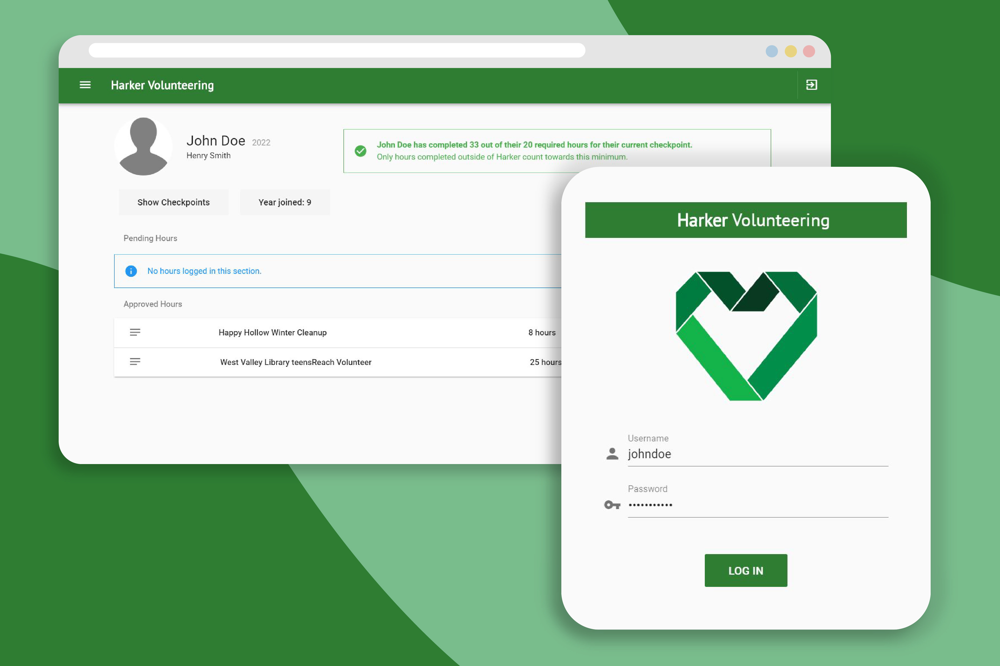

To see smaller and/or abandoned projects, visit the playground.

Harker Volunteering
NodeJS
Express
MongoDB
VueJS/Vuetify
Warden
Typescript
Gitlab Issues API
discord.js
A Discord bot for interaction with the Gitlab Issues API. Allows for listing, creating, deleting, and assigning issues based on channel and Discord user IDs.
NN
C
Bitmaps!
Feed-forward neural network with backpropagation and adaptive learning, implemented from scratch. Also includes 24-bit and 32-bit bitmap processing. Written for Honors ATCS: Neural Networks.
Harker Announcements [Frontend]
VueJS/Vuetify
LIMEADE [on hold]
Unity
C#
A 2D imgel platformer built with the Unity game engine and all custom imgel art!
CSON [in progress]
C
JSON!
A lightweight JSON parser for C, with custom hashmap implementation.